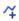
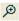
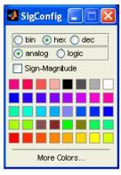

The viewer allows you to observe the time-changing values of any wires in the design after the conclusion of the simulation. The signals may be formatted in a logic or analog format and may be viewed in binary, hex, or decimal radices.
Note that the WaveScope block has been dropped into the model. You double-click on the WaveScope block to open it, which brings up the blank waveform viewer. Now you can highlight the three wires in the model by clicking on all three wires while holding down the
Shift key. you then push the
Add Selected Nets  button in the waveform viewer to add those wires to the viewer. The WaveScope window now appears as shown:
The three signals appear in the viewer. Two of the signals have been automatically named because they were not explicitly named in the model. Now you run the simulation using the
Start 
button on the model's window. This simulation has a period of 1s and runs for 10s. The waveform viewer automatically updates. You can zoom out to the full view using the button and the viewer appears as shown:
You can change the radix of the signal 'theta' to hex. You click on the name 'theta' or the associated signal waveform to highlight it, then double-click on the highlighted signal (not on the name) to bring up the formatting menu:
You select the hex radio button to format 'theta' as
binary. In a similar fashion, you can format the signal 'SineCosine/Out1' as
analog and change the color to
red:
The new signal names are displayed in the model. By using the  button, you can zoom in on a portion of the simulation. You can bring the yellow cursor to the center of the screen using the
Cursor > Center Cursor menu option and observe the value for any signal under the cursor by placing the mouse pointer on the cursor:
Double-clicking the WaveScope icon opens up the WaveScope window. If the WaveScope window is closed, it will open automatically at the end of a simulation. The WaveScope window is a powerful "scope" in which the simulation results may be displayed in several ways.
WaveScope displays the signal on a given net or nets. The signal can be viewed in more than one way simultaneously, for example, viewing it both in logical and analog formats. Each signal can be displayed either as logic or analog, and the values can be displayed in hexadecimal, binary, or decimal radices. At the bottom of the display is the clock signal for reference.
There are two ways to select nets to view in the WaveScope window. Select any output net(s) of a Xilinx block (or the blocks themselves) in the Simulink window, then press the

icon in the WaveScope toolbar ("Add selected nets"). Multiple blocks/nets may be selected by holding the 'shift' key while selecting. The signal for the selected net(s) will appear in the WaveScope window. For any blocks that were selected, all of the inputs and outputs to the selected blocks will be added to the WaveScope window. There will be no data for the WaveScope to display until the model is simulated. After simulation, the data will appear in the WaveScope window.
Pressing the Add Selected Nets button in the tool bar multiple times will display the signal in the WaveScope viewer multiple times.
The second method of choosing nets is to use the "Nets" menu. This contains a hierarchical list of blocks and nets in your model. In a complex diagram it may be easier to use this menu to navigate to a particular net.
Click on a signal or the corresponding net name with the left mouse button to select the signal. Once a signal has been selected it can be moved in the display by dragging it to a different location. If you wish to select several signals at once, use Shift-click or Control-click on the
net names only; it will not work with the signals themselves.
If you select multiple signals, which need not be contiguous signals in the display, and move them in the display, they will all be moved to a contiguous block of signals. This is handy for displaying several related signals together so they can all be seen at once.
If you decide not to view a signal after adding it to the WaveScope window, just select the signal and press the
Delete Signals button on the toolbar. The del key is the keyboard shortcut to this function, and the Edit menu provides a "Delete" item as well.
The standard Cut,
Copy and
Paste functions are available for signals as well. Using the Copy and Paste icons on the toolbar, keyboard shortcuts
Control-X for cut,
Control-C for copy and
Control-V for paste, or the
Copy and
Paste entries in the
Edit menu, allows you to display a net multiple times in the WaveScope.
Some signals are naturally viewed as numerical values in which the value is of primary concern, and some as logical states in which the transition is the key datum. With WaveScope you can choose which way to view the signal.
|
•
|
Format – Select "logic" to show the signal as a logical signal with transitions emphasized. The value is written after each transition. Select "analog" to display the signal as a graph of the value. The high and low values for the signal are display in the left of the graph as well. The size of the analog signal may be changed by dragging the bottom of the selected analog signal.
|
|
•
|
Radix – Select "hex," "binary" or "dec" to choose the radix of the displayed numbers. Numbers will always be displayed with the proper radix point. For example, the decimal number 10.5 would be displayed as A.8 in hex.
|
|
•
|
Sign-Magnitude - Select "Sign-Magnitude" to have WaveScope interpret the values as a sign-magnitude rather than a two's complement number. Decimal values are always displayed in sign-magnitude format.
|
|
•
|
Color – Wavescope chooses a default value for a color. Use a colored button to select a new color for all the selected signals.
|
To change the size of the analog signal, grab the bottom edge of a selected analog signal (as shown) and move the bottom up or down to make the analog signal smaller or bigger, respectively:
Double-click on a signal's name to change it. You may also change the name on the wire in the model. In this case when the simulation is re-run or the WaveScope window is refreshed using the button, the signal name will be updated in the WaveScope window.
It is easier to observe signals when they are separated in the visual spectrum. As signals are added, a new color is selected from a rainbow palette. A group of signals may be re-rainbowed by selecting a group of signals and pushing the rainbow button. To re-rainbow all of the signals, select them all using Control-A and push the rainbow button:
You can zoom in and out with either the magnifying glass icons, the view menu, or the 'i' and 'o' keys on your keyboard. You may also zoom to a box by dragging a rubberband box in the WaveScope window. Arrow keys will scroll the display, or you can use your mouse in the sliders at the right and below the signal display. Note that when there is sufficient room to display the signals in one dimension or the other, the sliders will not display.
The control key allows for finer-resolution zooming and panning. Holding down the control key while pushing the left and right arrow keys will pan by one clock cycle. Holding down the control keys in conjunction with the 'i' and 'o' keys will zoom in and out by a smaller factor.
There are times when you may want to display only a subset of your data. For instance, your simulation may run for a long time, but you are only interested in looking at the last 1000 steps of the simulation.
The more data that is displayed in the WaveScope, the slower the WaveScope will be. One possibility is to zoom in on the desired data, but if there is a lot of data the WaveScope will still be slow. In this case a better solution is to reduce the Recording Limits of the WaveScope.
By default, WaveScope records all the values on a signal from start of a simulation to the finish. You can change these limits by using the
Options menu and selecting the
Recording Limits submenu. A dialog will open in which you can set the start and ending time for recording. As shown below, the dialog is pre-populated with the current lowest and highest value. You can enter any number here. The end time can be set to "Inf", as well, indicating no preset upper limit.
Once the recording limits are set, the WaveScope will only display values in that time range. You cannot zoom back out of that range. When you rerun the simulation, only the values at times in that range are recorded.
The cursor is helpful for visually aligning signals or marking a point of interest. The cursor may be brought to the currently-viewed time span by clicking underneath the time axis. When moving the pointer underneath the time axis, the mouse pointer changes to a cross, indicating that the cursor may be moved to that location and moved around within the current view.
The cursor may also be brought to the center of the screen using the 'c' key or the Cursor > Center Cursor menu option. Once on-screen, the cursor may be moved around by dragging it. When the mouse pointer is placed over the cursor, the pointer will change to a cross to show it may be dragged.
When the mouse pointer is over the cursor, a tool tip shows the value of the signal underneath the mouse pointer. This is valuable for displaying the value of an analog signal or the full value of a logical signal when the zoom factor is such that the full value cannot be displayed on the signal:
As the cursor is dragged, the tool tip will be updated. Note the mini-cursor underneath the scroll bar, which appears as a yellow tick mark. When the cursor is not in the selected view, the mini-cursor shows where the cursor resides on the time axis. To jump to the current cursor location, use the 'j' key or the
Cursor > Jump to Cursor menu option.
It is often helpful to be able to jump to the next signal transition without having to pan and search for the transition. To jump to the next transition, place the cursor on the screen and select the signal of interest. Press 'enter' or use the
Cursor > Move Cursor Next menu option to move the cursor to the next signal transition. If the cursor moves off screen the view will be panned to keep the cursor on screen.
This option toggles whether the WaveScope should run at the end of a simulation. By default, the WaveScope will display. If you don't want the WaveScope to appear at the end of simulation, use this option
The System Generator WaveScope block provides a powerful and easy-to-use waveform viewer for analyzing and debugging System Generator designs.
The viewer allows you to observe the time-changing values of any wires in the design after the conclusion of the simulation. The signals may be formatted in a logic or analog format and may be viewed in binary, hex, or decimal radices.